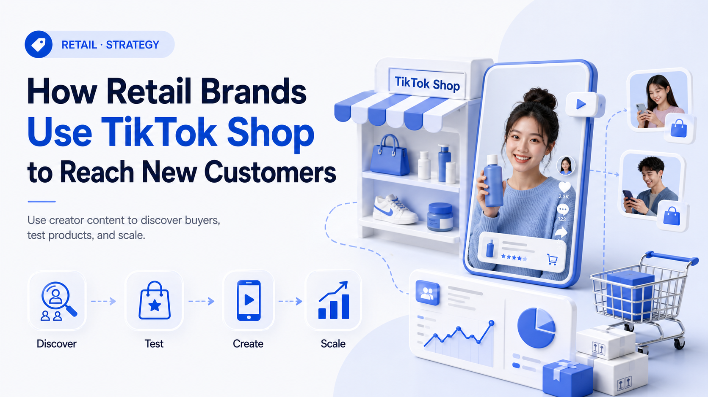

WE Marketing · WEM Blog
How Retail Brands Use TikTok Shop to Reach New Customers

Retail brands are using TikTok Shop to reach younger buyers, test products, and create content at scale. Here's how the channel fits into a retail strategy.
- TikTok Shop agency strategy
- Creator affiliate and UGC operations
- Product page, content, and conversion guidance
WE Marketing / WEM 发布 TikTok Shop 代运营、达人联盟、UGC、直播和商品页转化相关实战内容。
Back to WE Marketing blog